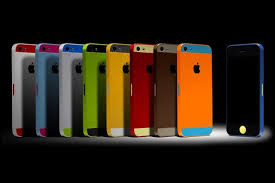

Iphone 5S: Hands-on with the new Apple flagship

CUPERTINO, Calif. -- Apple pulled back the curtain on its buzzy iPhone 5 successor at a Tuesday launch event held here at the company's headquarters. Physically, the gold, "space gray," or white aluminum iPhone 5S closely resembles the iPhone before it (bye-bye, basic black), but Apple has bulked up its flagship smartphone with a fingerprint scanner, a faster 64-bit A7 processor, and high-end camera features. What the 5S doesn't have, though, is a larger screen: it's exactly the same as last year's iPhone 5, and Apple's other new iPhone, the 5C and if I claim to be a wise man, it surely means that I don't know...